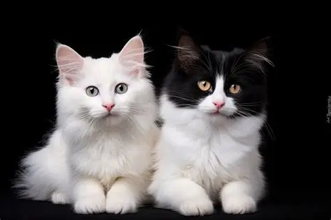

Koty są fajne.

Koty są najbardziej popularnym zwierzęciem domowym na świecie. Są one znane ze swojej niezależności, zwinności i zdolności do polowania. Koty mają różne rasy, kolory i wzory futra, co sprawia, że są bardzo różnorodne.
| Fakt | Opis |
|---|---|
| Spanie | Koty śpią do 16 godzin dziennie. |
| Wąsy | Koty mają wąsy, które pomagają im orientować się w przestrzeni. |
| Komunikacja | Koty komunikują się za pomocą różnych dźwięków i gestów. |
Odwiedź stronę o kotach aby dowiedzieć się więcej!
Koty są wspaniałymi towarzyszami i mogą przynieść wiele radości do życia człowieka. Pamiętajmy, aby dbać o nie i zapewnić im odpowiednią opiekę. Tworzą świat lepszym!